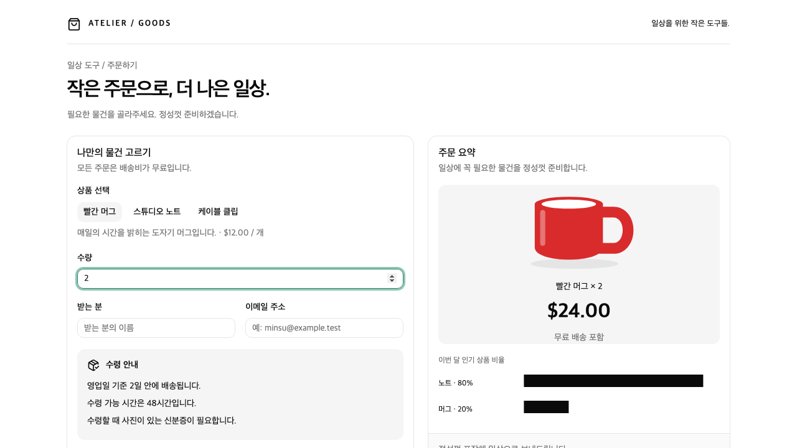
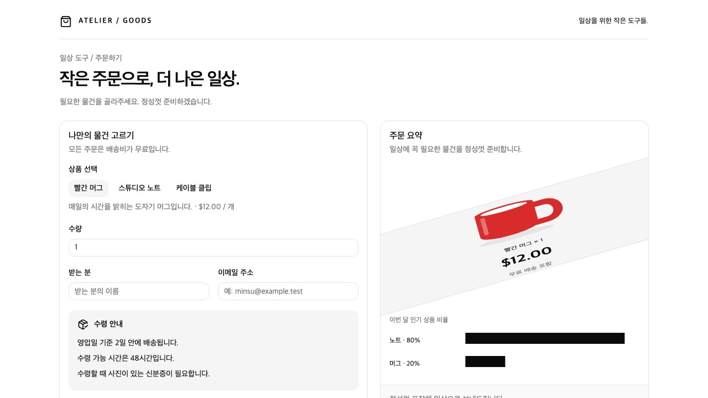
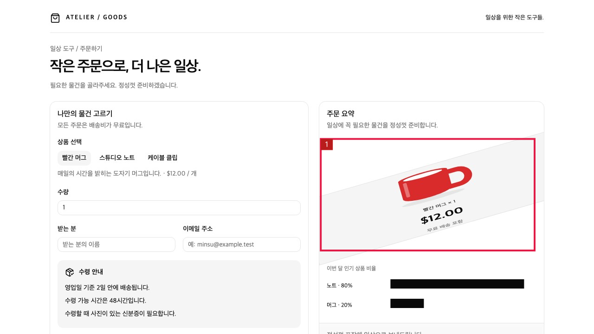
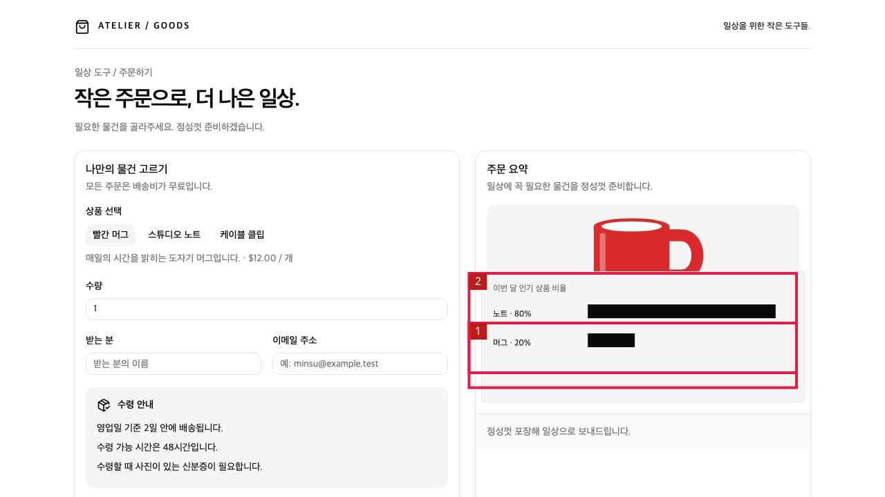
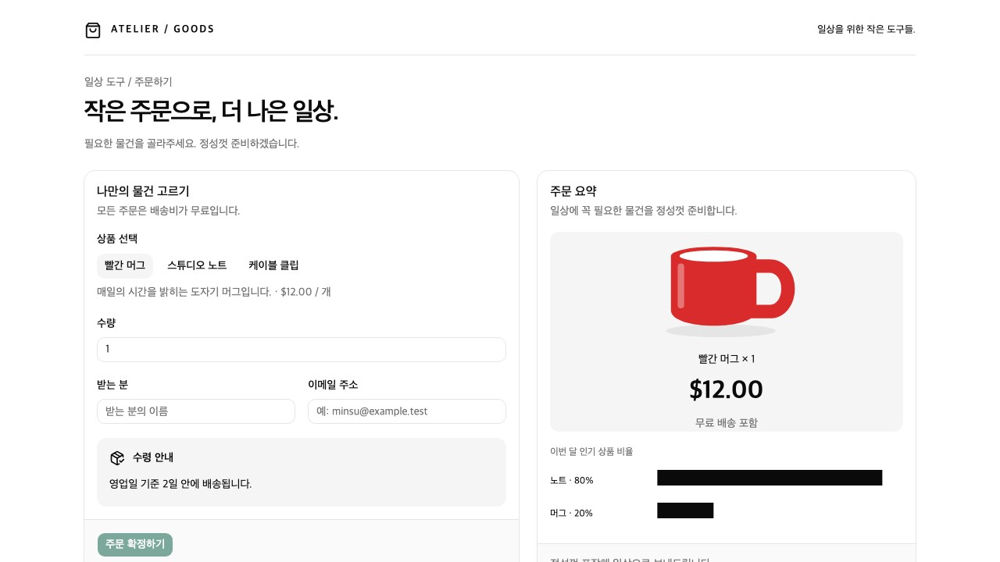
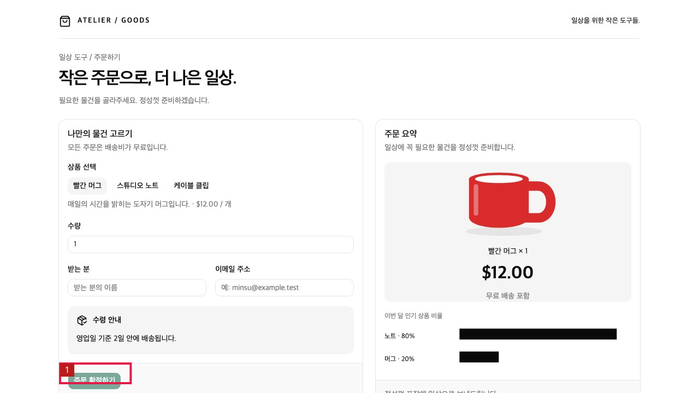
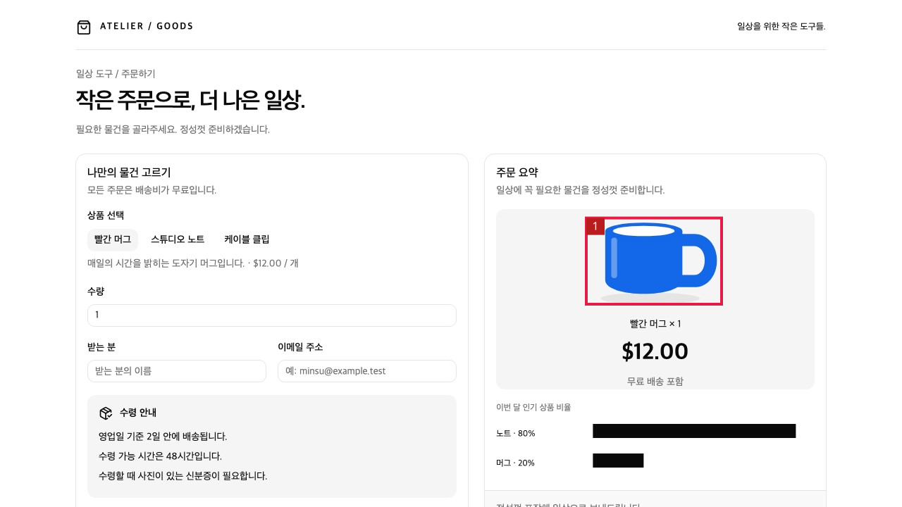
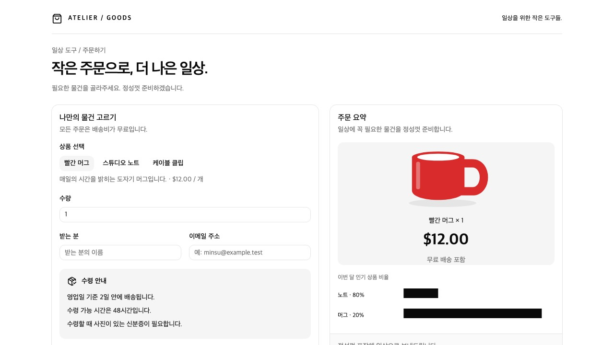

A · 정상 대조
동일 화면 비교에서 후보 없음. 정상 대조 1회 결과.

모델 요약: 두 화면은 시각적으로 동일하며 차이가 없음.
원본 · 배포 코드 실행 기록 · 235B 단일 화면 응답 · 관찰 우선 응답 · 정상 참조 비교 원응답실제 모델 실행 기록입니다. 붉은 박스는 모델이 반환한 좌표를 표시한 것이며, 검출 성공이나 정답 위치를 수작업으로 만들어 넣지 않았습니다. 정상 참조 비교는 별도 진단 실험이며 현재 앱 기능으로 배포된 검사는 아닙니다.
| 비교 | 결과와 범위 |
|---|---|
| 기존 코드 · Qwen 30B | A 후보 없음, C/D/G 미탐, E 기준 없이 누락 판정 어려움, F 공급자 요청 실패. 전체 업무 완료율 평가 아님. |
| 관찰 우선 · Qwen 30B | F 색상 모순 지적, 정상 A와 다른 화면에 오탐. 채택하지 않음. |
| 동일 검사 요청 · Qwen 235B | 여섯 화면 모두 후보 없음. 모델 교체만으로 해결되지 않음. |
| 정상 참조 + Qwen 235B | C/D 차이 지적, F 색상 변경 의심, E 미탐·오탐, G 미탐. 각 1회이며 일반 성능을 뜻하지 않음. |
코드 64dc098. 좌표 계약을 명시해 픽셀로 한 번 변환하고 기존 값을 교체했습니다. 실제 화면에서 수량 2, 합계 $24를 확인했습니다. 6요청·3도구 행동·보고 비용 $0.00302541. 시각 결함 검출 개선의 증거와는 별개입니다.

한국어 관찰·행동·입력 확인 원장동일 화면 비교에서 후보 없음. 정상 대조 1회 결과.
모델 요약: 두 화면은 시각적으로 동일하며 차이가 없음.
원본 · 배포 코드 실행 기록 · 235B 단일 화면 응답 · 관찰 우선 응답 · 정상 참조 비교 원응답기울어진 상품 요약 차이를 지적. 박스는 주요 그림·금액에 걸쳐 있으나 영향 영역 전체를 정밀하게 감싸지는 않음.


모델 요약: 주문 요약 영역의 이미지와 텍스트가 기울어져 표시되는 시각적 결함 있음.
원본 · 배포 코드 실행 기록 · 235B 단일 화면 응답 · 관찰 우선 응답 · 정상 참조 비교 원응답기존 가격 영역을 덮는 차트와 가격 가림을 지적. 두 박스가 중복되고 설명 일부는 추가와 이동을 혼동함.


모델 요약: 가격 및 무료 배송 정보 누락은 결함, 정보 배치 변경은 의심 사항.
원본 · 배포 코드 실행 기록 · 235B 단일 화면 응답 · 관찰 우선 응답 · 정상 참조 비교 원응답필수 안내 누락은 놓치고, 화면 높이 변화로 보이게 된 버튼을 의심함. 미탐과 오탐.


모델 요약: 하단에 '주문 확정하기' 버튼이 추가되었으나, 이는 기능적 필요에 따른 변경일 수 있어 결함으로 단정할 수 없음.
원본 · 배포 코드 실행 기록 · 235B 단일 화면 응답 · 관찰 우선 응답 · 정상 참조 비교 원응답빨강→파랑 차이를 의심으로 보존. 상품명과 이미지 모순의 영향 설명은 부족함.

모델 요약: 주문 요약의 컵 아이콘 색상만 다름. 기능적 문제는 없으나 시각적 일관성 의심.
원본 · 배포 코드 실행 기록 · 235B 단일 화면 응답 · 관찰 우선 응답 · 정상 참조 비교 원응답역전된 두 막대를 동일 화면이라고 오판. 미탐.

모델 요약: 두 화면은 시각적으로 동일하며 차이가 없음.
원본 · 배포 코드 실행 기록 · 235B 단일 화면 응답 · 관찰 우선 응답 · 정상 참조 비교 원응답원본 해시·호출 합계와 판정은 SUMMARY.json 및 README.md를 참고하세요. 임시키·설정 저장소는 포함하지 않습니다.